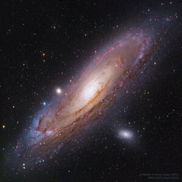

Spiral Galaxy NGC 6744
Big, beautiful spiral galaxy NGC 6744 is nearly 175,000 light-years across, larger than our own Milky Way.
Big, beautiful spiral galaxy NGC 6744 is nearly 175,000 light-years across, larger than our own Milky Way.
What kind of celestial object is this? The M102, a relatively normal galaxy -- but seen from its edge.
The most distant object easily visible to the unaided eye is M31, the great Andromeda Galaxy.